Elecrow ESP32 display boards
19 boards – ESP32, ESP32-P4, ESP32-S3. Filter and compare them in the interactive catalog →
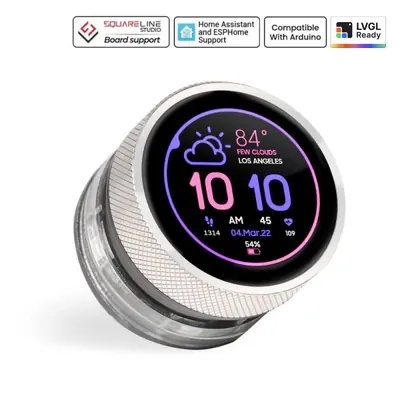
CrowPanel 1.28" Rotary1.28" 240x240 IPS Capacitive touch · ESP32-S3 · 16MB flash, 8MB PSRAM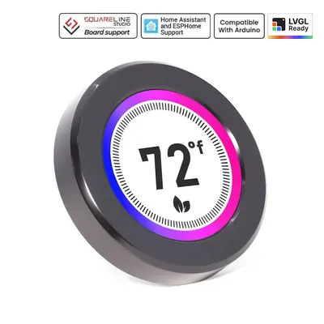
CrowPanel 2.1" Rotary2.1" 480x480 IPS Capacitive touch · ESP32-S3 · 16MB flash, 8MB PSRAM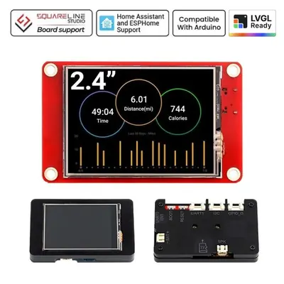
CrowPanel 2.4" Basic2.4" 240x320 TN Resistive touch · ESP32 · 4MB flash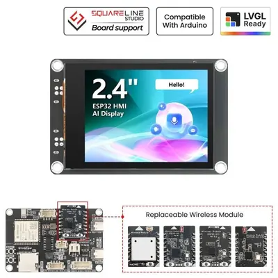
CrowPanel Advance 2.4"2.4" 320x240 IPS Capacitive touch · ESP32-S3 · 16MB flash, 8MB PSRAM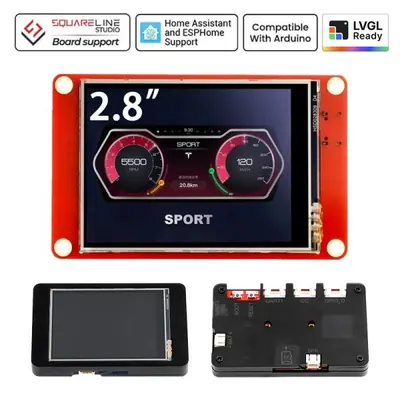
CrowPanel 2.8" Basic2.8" 320x240 TN Resistive touch · ESP32 · 4MB flash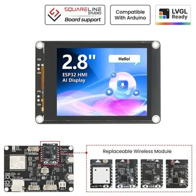
CrowPanel Advance 2.8"2.8" 320x240 IPS Capacitive touch · ESP32-S3 · 16MB flash, 8MB PSRAM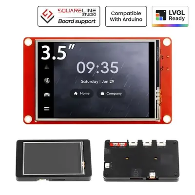
CrowPanel 3.5" Basic3.5" 480x320 TN Resistive touch · ESP32 · 4MB flash, 8MB PSRAM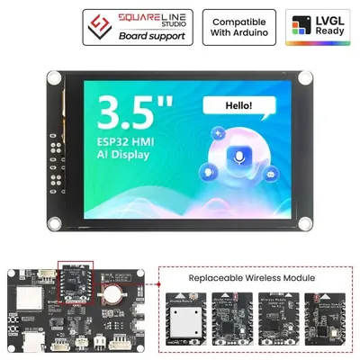
CrowPanel Advance 3.5"3.5" 480x320 IPS Capacitive touch · ESP32-S3 · 16MB flash, 8MB PSRAM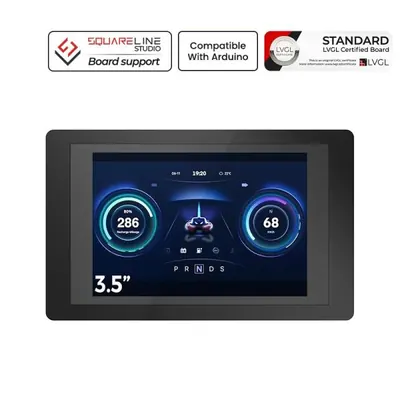
ESP Terminal 3.5"3.5" 480x320 TFT Capacitive touch · ESP32-S3 · 16MB flash, 8MB PSRAM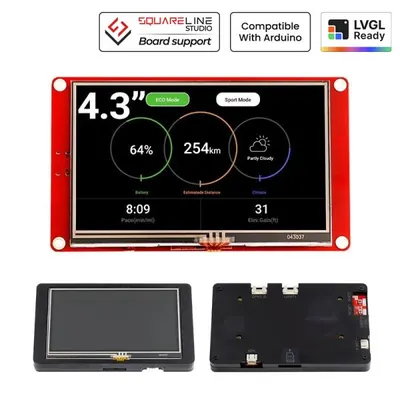
CrowPanel 4.3" Basic4.3" 480x272 TN Resistive touch · ESP32-S3 · 4MB flash, 2MB PSRAM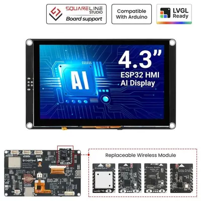
CrowPanel Advance 4.3"4.3" 800x480 IPS Capacitive touch · ESP32-S3 · 16MB flash, 8MB PSRAM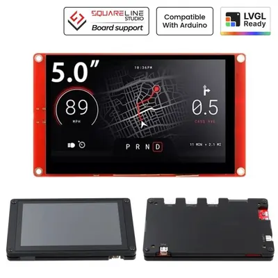
CrowPanel 5.0" Basic5.0" 800x480 TN Capacitive touch · ESP32-S3 · 4MB flash, 8MB PSRAM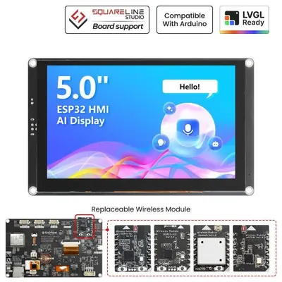
CrowPanel Advance 5.0"5.0" 800x480 IPS Capacitive touch · ESP32-S3 · 16MB flash, 8MB PSRAM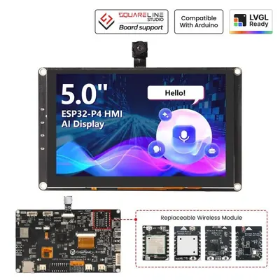
CrowPanel Advanced 5.0" ESP32-P45.0" 800x480 IPS Capacitive touch · ESP32-P4 · 16MB flash, 32MB PSRAM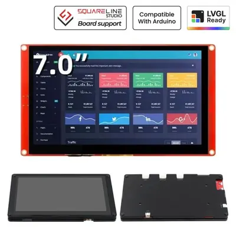
CrowPanel 7.0" Basic7.0" 800x480 TN Capacitive touch · ESP32-S3 · 4MB flash, 8MB PSRAM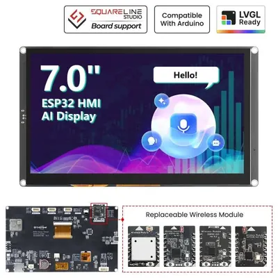
CrowPanel Advance 7.0"7.0" 800x480 IPS Capacitive touch · ESP32-S3 · 16MB flash, 8MB PSRAM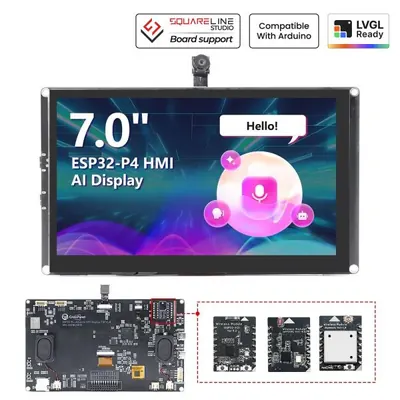
CrowPanel Advanced 7.0" ESP32-P47.0" 1024x600 IPS Capacitive touch · ESP32-P4 · 16MB flash, 32MB PSRAM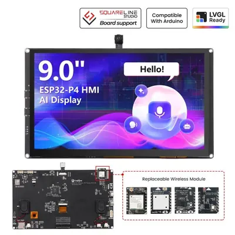
CrowPanel Advanced 9.0" ESP32-P49.0" 1024x600 IPS Capacitive touch · ESP32-P4 · 16MB flash, 32MB PSRAM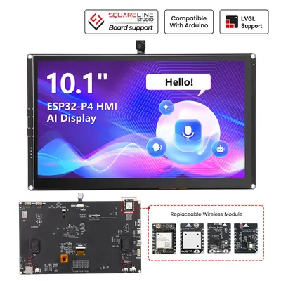
CrowPanel Advanced 10.1" ESP32-P410.1" 1024x600 IPS Capacitive touch · ESP32-P4 · 16MB flash, 32MB PSRAM